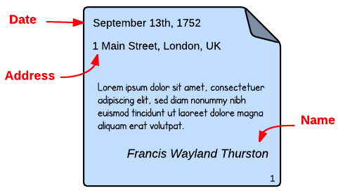
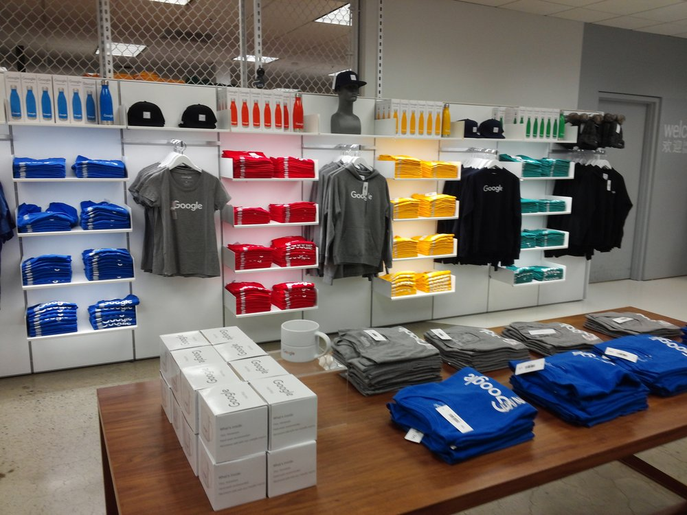
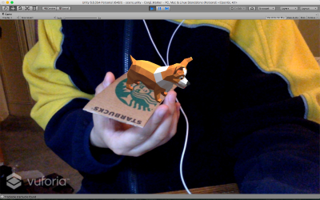

NLP: Generate Knowledge Graph to Answer Questions
 Extracted text from pdfs using OCR, parsed named entities and relationships using Stanford CoreNLP.
Established an LDA model by cross validation for topic analysis.
Created knowledge networks to answer questions.
Extracted text from pdfs using OCR, parsed named entities and relationships using Stanford CoreNLP.
Established an LDA model by cross validation for topic analysis.
Created knowledge networks to answer questions.
Text Analysis: Financial Data Extraction Problem
 Extracted text from searchable pdfs and store the information in JSON format using Python. Compared text similarity using word2vec and trained a text classification SVM model to classify documents into different categories. Deatiled work at Github
Spark ML: Predict median home value
 Implemented functions that set up the feature dataframes and used QuantileDiscretizer to bucket columns.
Constructed a pipeline that went from the discretizer to the Linear Regression model.
Implemented functions that set up the feature dataframes and used QuantileDiscretizer to bucket columns.
Constructed a pipeline that went from the discretizer to the Linear Regression model.
Kaggle Competition: Google Analytics Customer Revenue Prediction
 Visualized the relationship between device type, GEO location, and date with revenue using Matplotlib. Built a LightGBM model to train and predict the revenue per customer in Google Merchandise Store. Deatiled work at Github
Prediction Problem: Predict Online News Popularity
Explore the dataset by drawing correlation martix and apply PCA to the data. Train and test regression and classification models to predict the news popularity. Detailed work at Github
Web Application: Crux AR
Setup the backend of the web application using Python and Django framework to track and increase businesses engagement. Convert documents into better sales. Video demo at Youtube.
Web Application: Social Distribution
 Mimic social websites like Facebook and Twitter.
Deatiled implementaion at Github
Video demo at Youtube.
Mimic social websites like Facebook and Twitter.
Deatiled implementaion at Github
Video demo at Youtube.
Research Topic: Human Interaction in Augmented Reality (AR)
 Got our paper accepted by IEEE, published in October 2018. Available at https://ieeexplore.ieee.org/document/8122603/
Enabled voice recognition to the experiment to help improve the interaction between human and augmented reality Detailed work at Github. Video demo at Youtube.
Android Application: Beep
It is an application that calls or offers for rides like Uber or Lyft. Built the application in Java with Model-View-Controller architecture. Combined Google map API for the navigation in the application. Detailed work at Github. Video demo on Youtube.